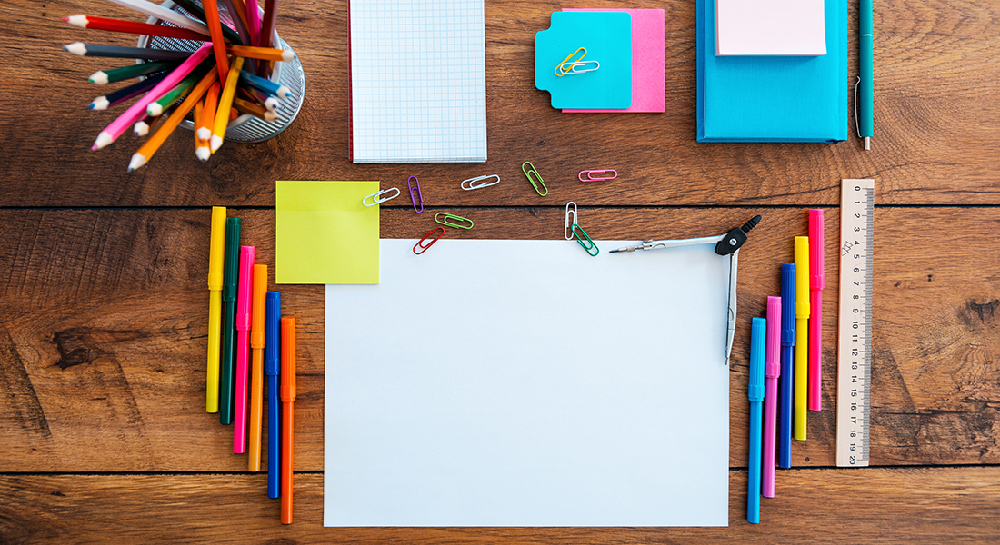

Succeeding in school is not a matter of luck. This is a reflection of habits and tactics that successful students
are using in their daily life to outperform. But why are those habits so critical? So how can you co-opt them to
serve your own coup academic ends? In this blog post, I will discuss the top five habits of successful students
and how to achieve those habits with concrete steps backed by data — including case studies. No matter what you
study or which school you go to, if your goal is to be successful in the course of education and have better
grades then this page is for you.
Problem: Struggling to Achieve Academic Success?
Find it hard to get good grades despite studying long hours. The issue is not so much whether you are trying hard
enough — it is about using the right tools. More than 30% stated that they feel awful when holding up by their
homework, and the vast majorities have no thought of how to ponder. So, what’s missing?
Agitation: The Frustration of Ineffective Study Habits
Imagine this: you slave away for hours studying, but when exam day rolls around, Are left scrambling. Your grades
do not mirror the amount of work you put in, and that is frustrating/overwhelming/downright discouraging. It’s a
common scenario. One research that has been conducted by the American Psychological Association shows that
students who have unhealthy ways of studying are 50% more likely to experience a lot of stress and poor academic
performance. But there is a solution to escape this cycle. Cultivating the right habits can turn around your
academic experience.
Solution: Adopt These 5 Habits for Success
Here’s a breakdown of five habits that successful students use to keep their academic performance on track.
These aren’t just theoretical ideas—they’re backed by research and real-life examples.
1. Organized Study Plans
 Why It Matters:
An organized study plan is crucial because it provides structure and reduces procrastination. According to a
study by the University of California, students with a clear study plan are 40% more likely to perform well
academically compared to those who don’t plan their study sessions.
How to Implement It:
Set Clear Goals: Define what you need to achieve in each study session. For example, instead of just
“study biology,” aim for “complete Chapter 4 and review key concepts.”
Create a Study Schedule: Use tools like calendars or apps to schedule your study time. Allocate
specific times for each subject and stick to it. A study by the Education Endowment Foundation found that
students who followed a study schedule had a 25% improvement in academic performance.
Break Down Tasks: Divide your study material into manageable chunks. Instead of cramming, focus on
small, consistent study sessions.
Case Study:
Consider Sarah, a high school junior. She struggled with managing her time until she started using a planner to
schedule her study sessions. By breaking down her study material and setting specific goals, Sarah saw a 20%
improvement in her grades over the course of a semester.
2. Active Learning Techniques
Why It Matters:
Active learning involves engaging with the material in a way that promotes deeper understanding. A study
published in the Journal of Educational Psychology found that students who use active learning techniques perform
30% better on tests compared to those who passively review their notes.
How to Implement It:
Use Practice Questions: Test yourself regularly. Creating or finding practice questions helps reinforce
what you’ve learned.
Teach What You’ve Learned: Explain concepts to a friend or study group. Teaching others is a powerful
way to solidify your understanding.
Apply Concepts: Try to connect what you’re learning with real-world examples or practical applications.
Case Study:
John, a college sophomore, used to rely solely on reading his textbooks. After incorporating active learning
techniques like self-testing and teaching his classmates, he improved his exam scores by 35% in just one semester.
3. Healthy Lifestyle Choices
Why It Matters:
Your physical health has a significant impact on your academic performance. According to the Centers for Disease
Control and Prevention (CDC), students who maintain a healthy diet, get regular exercise, and adequate sleep score
15% higher on average in academic tests.
How to Implement It:
Eat Balanced Meals: Focus on a diet rich in fruits, vegetables, and whole grains. Avoid excessive
caffeine and sugary snacks.
Exercise Regularly: Aim for at least 30 minutes of physical activity most days of the week. Exercise
can boost cognitive function and reduce stress.
Get Enough Sleep: Strive for 7-9 hours of sleep each night. A study from the American Academy of Sleep
Medicine found that students who get adequate sleep perform better academically and have lower levels of stress.
Case Study:
Emily, a college freshman, noticed a significant drop in her grades due to poor eating habits and irregular
sleep. Once she began prioritizing her health—eating balanced meals, exercising regularly, and maintaining a
consistent sleep schedule—her academic performance improved by 25%.
4. Effective Time Management
Why It Matters:
Good time management helps balance academic responsibilities with other aspects of life. Research from the
University of London shows that students who practice effective time management are 40% more likely to achieve
higher grades.
How to Implement It:
Prioritize Tasks: grade tasks in terms of their urgency versus their importance using the Eisenhower
Matrix. Focus on high-priority tasks first.
Use Time Blocks: Utilize time-block methodology and block out chunks of hours to study, take a break,
or spend time on extracurricular activities. For instance, in the Pomodoro Technique, you have to study for 25
minutes and then take a 5-minute break.
Avoid Multitasking: According to Stanford University, doing more than one task at a time may decrease
productivity up to 40%
Case Study:
Michael, a graduate student, was overwhelmed by his workload. By adopting time-blocking and prioritizing his
tasks, he managed to complete his projects more efficiently and saw his GPA rise by 20% in one semester.
5. Seek Help When Needed
Why It Matters:
Seeking help can prevent small problems from becoming big issues. According to a report by the National Survey of
Student Engagement, students who seek help from professors or tutors are 50% more likely to have a successful
academic experience.
How to Implement It:
Utilize Campus Resources: Take advantage of tutoring services, study groups, and academic workshops.
Many universities offer these resources for free.
Ask Questions:, Don’t hesitate to approach your professors or classmates when you need clarification.
Join Study Groups: Collaborating with peers can provide different perspectives and enhance
understanding of difficult concepts.
Case Study:
Rachel, a senior in engineering, struggled with complex math concepts. After joining a study group and seeking
help from her professor, she not only improved her grades but also gained a deeper understanding of the material.
Incorporating these habits into your daily routine can significantly enhance your academic performance. It’s not
about working harder but working smarter. By creating an organized study plan, using active learning techniques,
maintaining a healthy lifestyle, managing your time effectively, and seeking help when needed, you’ll set yourself
up for success.
Remember, the journey to academic success is a marathon, not a sprint. By consistently applying these habits,
you’ll build a strong foundation for achieving your academic goals and beyond. Start with one habit at a time and
gradually integrate the rest. Your future self will thank you.